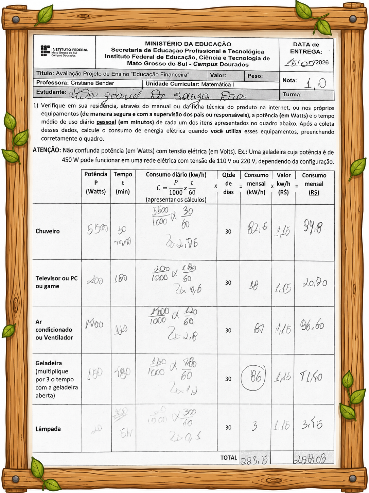

Trabalho Multidisciplinar - Educação Financeira
voltar
nessa pagina mostrarei oque irei apresentar no trabalho
trabalho de matematica
trabalho de ferramentas de desenho
infografico
trabalho de matematica

trabalho de ferramentas de desenho
infografico
inicio